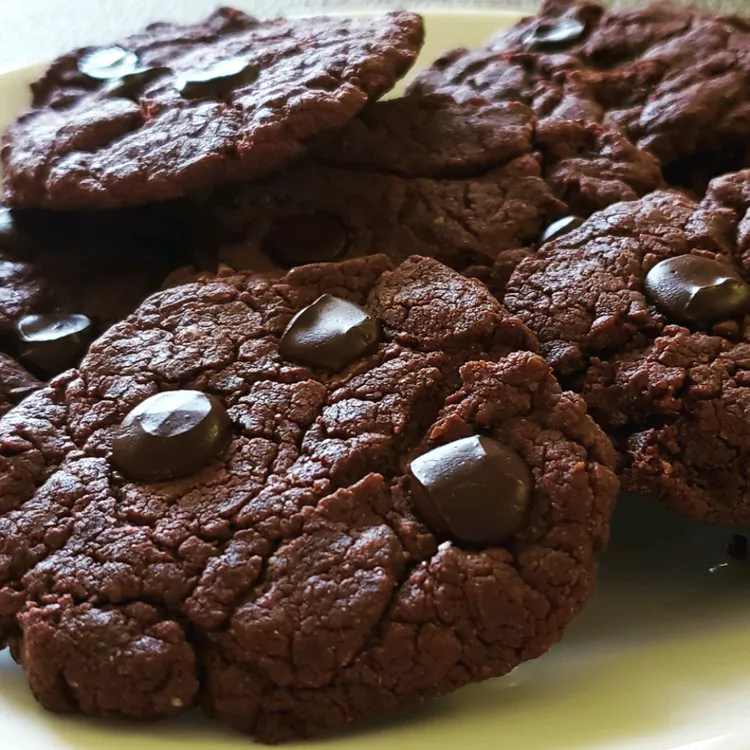

Chocolate Fudge Cookies

Description
These Vegan Chocolate Fudge Cookies are rich, decadent, and intensely chocolatey, with a soft,
fudgy center and a slightly crisp exterior.
Made without dairy or eggs, they deliver all the indulgence of classic chocolate cookies while remaining completely
plant-based.
Perfect for dessert, special occasions, or an everyday treat, these cookies are easy to make and sure to satisfy any chocolate craving. Their deep cocoa flavor and chewy texture make them an irresistible option for anyone looking for a delicious vegan baked good.
Ingredients
- 120 g whole wheat flour
- 1.2 g baking soda
- 0.75 g salt
- 135 g white sugar
- 70 g brown sugar
- 80 g mashed banana
- 35 g unsweetened cocoa powder
- 70 g coconut oil
Steps
-
Preheat the oven to 350 degrees F (175 degrees C).
-
Mix flour, baking soda, and salt together in a bowl.
-
Combine both sugars in a saucepan with mashed banana. Set over low heat and stir in cocoa powder and coconut oil. Cook and stir until blended and smooth, about 5 minutes.
-
Add flour mixture to the pan and stir until a smooth dough forms. Drop spoonfuls of dough 2 inches apart onto ungreased baking sheets.
-
Bake in the preheated oven until edges are golden, about 8 minutes.
-
Remove from the oven and cool on a wire rack.
Home